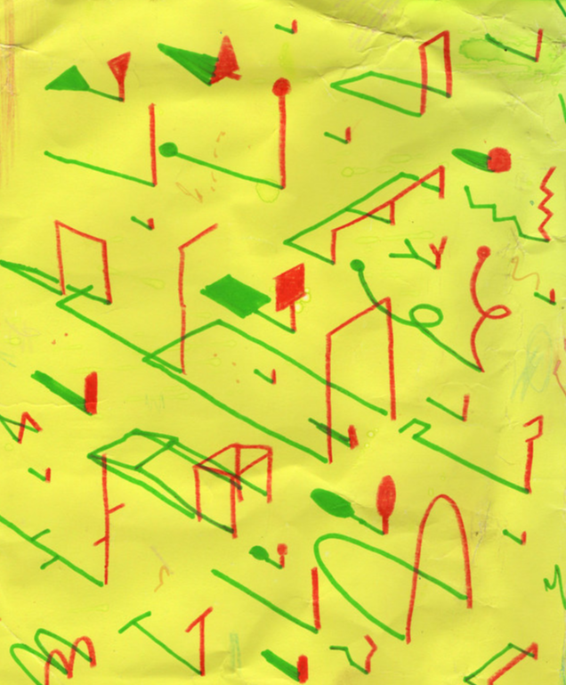

My website
I am an analogue person, and its ironical that I got into a program called Digital Futures. I have always struggled as to where I would fit in with my analogue work in this digital space. So, I made a website that reflects my personality and my love for crude analog work. The concept behind making this interactive website was a playground with abstract playing apparatuses in it. Every playing apparatus would be a project. My website was influenced by this image I saw on Flickr by Pablo Boffelli:
Layout design
I started of with sketching a basic layout of my website. It followed a common template of how usually portfolio websites are. No innovation there. The projects and exercises were scattered randomly on the homepage visualised as the apparatuses of the play area.

Logo
Logo was supposed to be the most important element of my website. I wanted it to be a playful, chonky, type-logo with my name-ABHA. Here are a few sketches I designed for the same.
Contact me icon
The intention of the website was also networking, so the contact me icon played an important part of the design. How do I make someone “WANT” to contact me? Or even just say a simple hello?

Favicon
The favicon was cut out from the "a" of the logo design

The background
After the design of different assets, it was finally time to compile them on a background, and see how my homepage looks in totality. Here is a mockup that was made on procreate to see how the elements on the website would shape up. The individual play apparatuses were distributed randomly into exercises and projects.

How did I do the shadows?
What really fascinated me about pablo's image were the long shadows of every piece and I thought it would be an interesting opportunity to use them as the main interaction in my website. Using 3D softwares was out of question because I have no idea how to model in 3D. So i went back to my crude analog methods.
With some help from a friend, I made a frame by frame animation of the shadows moving from left to right. The orignal animation consisted of 19 frames. The screen was divided into 19 sections and every section was asigned a specific frame of the animation, this way as the mouse moved from left to right, the shadows followed. The cursor was designed to mimic the sun, so that it compliments the shadow concept.

19 separate JPEGS made the website SUPPER LAGGY!
This is when I chopped off some in-betweens and reoriented the sections of the screen as below:

Linking pages
After the website looked close to what I had imagined, it was just a matter of linking pages. Thats when I realised how important it is to be organised while making any website. Your folders, assets, everything needs to be named properly and is supposed to follow a specific folder structure. I had done none.
Painstakignly, I redid the folder structure and names. And finally re-linked my pages. I think this took me the longest, but I learnt my lesson.

So much more to be done..
1. The animation is still not clean.
2. I am not happy with the handwritten fonts. Could have definately done a better job!

3. An about me page
4. The contact me form is still a dummy form. Need to link it to my email-id so I can actually get some emails.

5. The website needs a loading page, so that all the images load, to avoid the choppy interaction in the start.